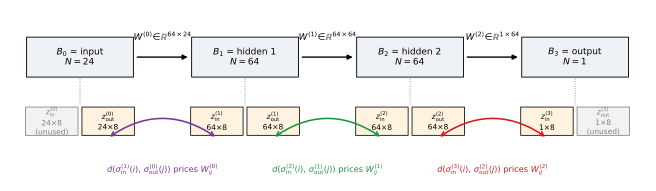
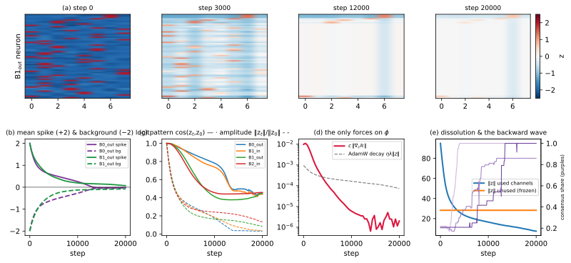
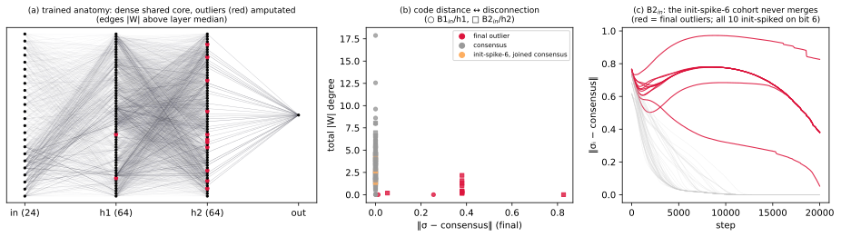
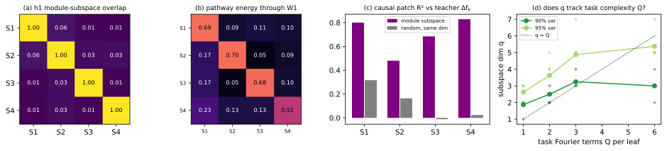
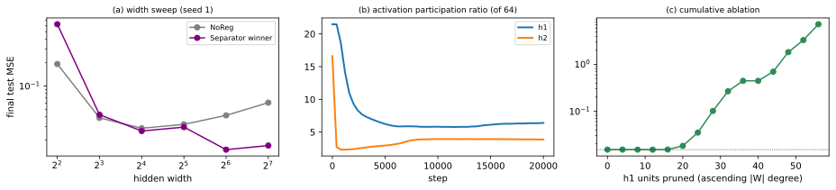

This note dissects a single training run — the v10 HP winner on the flat cell at its representative seed — and asks what the method is doing while it wins; controls one run cannot provide (a width sweep, baseline re-analyses, a task-complexity sweep) are added where needed. Companion: What is the Separator regularizer actually doing?; code and an executable version of every figure:.
Setup
Task.
flat_modular, v10 cell
primitive=sinusoidal, w=4, d=1, o=0, nu=16, r=0.7, s=0, standardize_y.
The axes: \(w\) = number of leaf
modules (4); \(d\) = hierarchy depth (1
= a flat sum, no composition); \(o\) =
overlap (0: factor sets are disjoint); \(\nu\) = nuisance input dimensions (16);
\(r\) = training input range; \(s\) = label-noise std (0);
standardize_y = divide \(y\) by its empirical std. Input \(x=(z,\xi)\in\mathbb{R}^{24}\): signal \(z\in\mathbb{R}^{8}\) in four disjoint
factor pairs \(S_k=\{2k{-}2,\,2k{-}1\}\), nuisance \(\xi\in\mathbb{R}^{16}\). Target: \[y(x)=\frac{1}{\sigma_y}\sum_{k=1}^{4}
f_k\!\bigl(z_{S_k}\bigr),\qquad
f_k(u)=\frac{1}{\sqrt{Q}}\sum_{q=1}^{Q}
a_{k,q}\,\sin\!\bigl(\langle\omega_{k,q},u\rangle+\varphi_{k,q}\bigr),\quad
Q=3.\] The teacher parameters are drawn once per module at
task construction from the task seed and frozen: \(a_{k,q}\sim U[0.7,1]\), \(\omega_{k,q}\sim\mathcal{N}(0,\,0.6^2
I_2)\), \(\varphi_{k,q}\sim
U[0,2\pi)\), independently across the four leaves. \(\sigma_y\) is the empirical std of the raw
sum over \(32{,}768\) train-range
samples (its own RNG stream, so enabling it does not change the data
draws). Train set: \(z\sim\mathcal{N}(0,\,r^2
I_8)\) with \(r{=}0.7\), \(\xi\sim\mathcal{N}(0,I_{16})\) (nuisance is
not range-compressed), \(n{=}2048\). All reported test MSEs use the
held-out extrapolate split \(z\sim\mathcal{N}(0,I_8)\) (\(n_{\text{eval}}{=}1024\);
split_use=final, task_seed=4242) — a mild
range shift. The train seed sets only network init and batch order;
every seed sees the identical teacher and data.
Model and training.
MLP \(24\!\to\!64\!\to\!64\!\to\!1\), GELU, \(5{,}825\) parameters; MSE loss; AdamW (lr \(\eta{=}10^{-3}\), \(\beta{=}(0.9,0.999)\), PyTorch-default weight decay \(\lambda{=}0.01\)), batch 200, 20k optimizer steps, deterministic. Seed 1 throughout: its final MSE (\(0.0151\)) is the closest to the 5-seed arm mean (\(0.0152\pm0.0026\)).

Method: Separator.
nr.dchn-euc-sq__c=3e-2__K=8__tau=2e-2 (\(\tau\) is inert for the dchn family).
Channels as in Fig. 1; penalty over the \(L{=}3\) weight matrices: \[\mathcal{R}=\frac{1}{L}\sum_{\ell=0}^{2}\
\sum_{i,j} \bigl(W^{(\ell)}_{ij}\bigr)^2\,
\bigl\lVert
\sigma^{(\ell+1)}_{\text{in}}(i)-\sigma^{(\ell)}_{\text{out}}(j)\bigr\rVert_2^2,
\qquad \text{loss}=\text{MSE}+c\,\mathcal{R},\quad
c=3\times10^{-2},\] so weight between code-distant neurons is
expensive. Predictions never depend on the codes, hence \(\partial\,\text{MSE}/\partial z\equiv0\):
the only forces ever applied to the codes are \(c\,\nabla_z\mathcal{R}\) and the AdamW
decay step \(\eta\lambda z\) (\(\approx\!10^{-5}z\) per step).
Initialization: \(z\sim\mathcal{N}(-2,\,0.1^2)\) with one
randomly chosen bit per neuron set to \(+2.0\) (\(\sigma\approx0.88\) vs. \(0.12\)) — verified: exactly \(281\) of the \(2248\) used-channel logits (\(=1/8\), one per neuron) equal \(2.0\) at step 0. Baselines: L1
(\(c\sum|W|\), winner \(c{=}10^{-5}\)) and NoReg; all HPs
come from the equal-budget grid on the disjoint selection split
(task_seed=2026). The run analyzed here is an instrumented
re-run capturing codes, weights and biases every 50 steps (401
snapshots); it reproduces the store’s per-seed MSE to \(\le1.2\times10^{-5}\).
Terminology.
Binarized code: \(b_i=\mathbf{1}[\sigma_i>0.5]\in\{0,1\}^8\). Modal code / consensus share: the most frequent \(b\) among a channel’s neurons and the fraction carrying it. Outliers: the channel’s neurons not carrying the modal code. \(|W|\) degree of a hidden neuron: the sum of absolute incoming plus outgoing weights. ARI (Adjusted Rand Index) between two partitions of \(N\) items with contingency counts \(n_{ij}\) (marginals \(a_i,b_j\)): \[\mathrm{ARI}=\frac{\sum_{ij}\binom{n_{ij}}{2}-\bigl[\sum_i\binom{a_i}{2}\sum_j\binom{b_j}{2}\bigr]/\binom{N}{2}} {\tfrac12\bigl[\sum_i\binom{a_i}{2}+\sum_j\binom{b_j}{2}\bigr]-\bigl[\sum_i\binom{a_i}{2}\sum_j\binom{b_j}{2}\bigr]/\binom{N}{2}},\] \(1\) = identical partitions, \(0\) = chance under random labeling with fixed marginals, negative possible. Here: items = the 24 input neurons; partition 1 = identity classes of their binarized \(B_0\)-out codes; partition 2 = ground truth (factor index for the 8 signal dims, one shared class for the 16 nuisance dims). A single-cluster partition scores ARI \(=0\) by construction (“no structure at all”), which the consensus share disambiguates from “wrong structure”.
Logit dynamics: the codes are a transient

Figure 2 tells the whole story in three phases.
(1) Adam-ceiling merge, 0–3k. The merge gradient of
\(\mathcal{R}\) is Adam-normalized into
per-coordinate steps of \(\approx\eta\): the measured median \(|\Delta z|\) per 50 steps is \(0.054\approx50\eta\) in the first window.
Every logit therefore travels at roughly the same speed toward its
pair’s meeting point, and a uniform-speed contraction preserves the
pattern while killing the amplitude — Fig. 2a shows the
heatmap fading in place; Fig. 2c quantifies
it (\(\cos(z_t,z_0)=0.68\)–\(0.89\) at 5k while the relative norm has
fallen to \(0.24\)–\(0.31\)). The codes land at \(z\approx0\) (Fig. 2b: spike and
background meet near the midpoint), consistent with both available
forces — equalized speeds from the symmetric \(\pm2\) starts (also \(\sigma'(2)=\sigma'(-2)\), so even
raw gradients balance at init) and the decay’s bias toward \(0\): the maximum-entropy “white code” \(\sigma=\tfrac12\) per bit. (2)
Extinction, 3–13k. Pruning and merging drive \(\mathcal{R}\to0\), and the code gradient
dies with it: \(c\lVert\nabla_z\mathcal{R}\rVert\) falls
\(9.9\times10^{-3}\to5.8\times10^{-4}\)
(3k) \(\to3.5\times10^{-6}\) (12k),
crossing below the weight-decay scale at \({\sim}4\)k (Fig. 2d); decay
does the residual shrinking. Consensus locks deepest-boundary-first
(Fig. 2e, sender-side shares): the \(\ell{=}2\) pair by \({\sim}2.8\)k, \(\ell{=}1\) at \(4.5\)–\(6.8\)k, \(\ell{=}0\) last (\(8.5\)–\(11\)k at share \(0.5\); \(B_0\)-out reaches \(0.9\) at \(13.5\)k). (3) Frozen
residue. Across the five multi-neuron channels only 14–34% of
neurons keep their init argmax (chance \(12.5\%\)). The two unused channels never
receive a gradient — PyTorch optimizers skip parameters whose
grad is None — and are bit-for-bit
identical to their init at step 20k; they carry \(28.3\) of the final total logit norm \(29.3\) (93% of the squared mass; the used
channels retain \(7.4\), Fig. 2e). Nothing in the objective ever asks
the codes to re-organize: the only force is attractive, and it
extinguishes itself. Corollary: the final binarized “consensus codes”
are threshold noise around \(\sigma{=}0.5\), and paired channels end
with matching modal codes simply because those are the pairs \(\mathcal{R}\) merges.
Outliers: amputation, not small-world wiring

A natural reading of “the regularizer prunes high-distance edges” is that training sculpts structured — modular, perhaps small-world — wiring. Figure 3a shows the actual anatomy: a single dense core with a few units cut off. Anatomical modularity stays at baseline: Newman \(Q\) (weighted modularity of the \(|W|\) graph over all 153 neurons, adjacent layers only, greedy CNM communities; 5-seed means) is \(0.22\) for the winner vs. L1 \(0.28\), NoReg \(0.11\).
What the outlier codes mark is which units got cut (Fig. 3b). At \(B_1\)-in the two outliers \(\{7,24\}\) have \(|W|\) degree \(0.001\) vs. \(3.67\) for consensus units, activation sd
\(0.000\) vs. \(0.213\): dead. Ablating both leaves test
MSE unchanged (\(0.0151\to0.0151\));
ablating two random consensus units instead gives \(0.172\pm0.202\). At \(B_2\)-, the 11 outliers (degree \(0.70\) vs. \(3.38\)) ablate to \(0.032\), vs. \(0.301\pm0.229\) for random consensus sets
of the same size. Outlier identity is largely an init
lottery: ten of the eleven \(B_2\)-in outliers form one cluster
(binarized code 00000010) and all ten init-spiked
on bit 6 — out of 14 bit-6 spikers in the channel; the remaining four
merged and stayed wired (orange in Fig. 3b). More
generally, a neuron whose init spike lies on the channel’s eventual ON
bits joins consensus with probability \(0.97\)–\(1.00\), vs. \(0.74\)–\(0.76\) otherwise. The mechanism closes the
loop with §2: a cohort whose init code mismatches the emerging consensus
has its cross edges priced by \(\mathcal{R}\); pruning those edges removes
both the neurons’ function and their merge gradient, so their
codes freeze permanently distinct while everything else dissolves
(Fig. 3c). The codes’ real act is
unit-level pruning of excess capacity. They do not
recover the task’s factors: on the input boundary all 24 senders end
with one shared (white) code — the degenerate single-cluster case — so
ARI \(=0\).
Functional modularity: real, rotated, and not method-specific
§2–§3 leave a tension: the codes saw no module structure (ARI \(=0\)), the anatomy shows none, yet the network fits a perfectly modular task well. Either it failed to decompose the task, or the decomposition lives where neuron-aligned views cannot see it. We test this in three steps — function, location, causation — then ask whether any of it is specific to Separator.
(i) The function is additive (Sobol analysis).
For a function of independent input blocks, the first-order Sobol index of block \(k\) is \(S_k=\operatorname{Var}\!\bigl(\mathbb{E}[f\mid z_{S_k}]\bigr)/\operatorname{Var}(f)\) — the fraction of output variance explained by block \(k\) alone; an exactly additive \(f\) has \(\sum_k S_k=1\), with interactions taking the remainder. We estimate \(S_k\) by the Saltelli pick–freeze scheme: draw independent \(A,B\in\mathbb{R}^{N\times24}\) (\(N{=}8192\), eval distribution), form \(A_B^{(k)}\) = \(A\) with block \(k\)’s columns copied from \(B\), and use \[\widehat S_k=\frac{1}{N\,\widehat{\operatorname{Var}}(f)}\sum_{n} f(B)_n\, \bigl[f(A_B^{(k)})_n-f(A)_n\bigr],\] which isolates block \(k\)’s main effect because \(f(B)\) and \(f(A_B^{(k)})\) share only that block. Result: model \((0.142,0.277,0.282,0.257)\) vs. teacher \((0.147,0.268,0.279,0.263)\) per factor pair; nuisance \(0.000\) for both; \(\sum_k S_k=0.959\) vs. \(0.958\). The learned input–output map is additive over the four factor groups to the teacher’s own measured precision.
(ii) Where the modules live: estimated subspaces.
Throughout, “rotated” has one precise meaning: module \(k\)’s activity does not occupy a subset of neurons (a coordinate-aligned subspace) but a low-dimensional linear subspace whose basis vectors mix many neurons. We do not learn or parameterize a rotation (. DAS); we estimate each module’s subspace from causal input perturbations. With \(X\) the 1024 eval inputs and \(X^{(k)}\) the same matrix with only \(S_k\)’s two columns resampled, the paired displacement matrix \(\Delta_k=h_1(X^{(k)})-h_1(X)\in\mathbb{R}^{1024\times64}\) collects how the layer moves when module \(k\)’s input alone changes. PCA on the centered \(\Delta_k\) ranks directions by displacement variance; \(U_k^{(v)}\) stacks the leading components reaching a fraction \(v\) of it, and \(q^{v}_k=\dim U_k^{(v)}\). The four probes are independent — no clustering, no predefined number of parts; the dimensionalities and all relations below are measured outcomes, not constraints. At \(v{=}0.90\): \(q_k=(3,4,3,3)\). The four subspaces are nearly orthogonal — mean squared cosine of principal angles \(0.01\)–\(0.06\) off-diagonal (Fig. 4a) — yet far from neuron-aligned: the mean over basis vectors of \(\max_i u_i^2\) is \(0.32\)–\(0.67\) (vs. \(1\) for a single-neuron axis, \(1/64\approx0.016\) for fully spread). Do the modules stay separate across layers? Taking layer-2 pre-activation subspaces (the map \(h_1\mapsto W_1h_1+b_1\) is exactly linear), the energy \(E_{k\ell}=\lVert (U^{\mathrm{pre}_2}_{\ell})^{\!\top} W_1 U^{h_1}_k\rVert_F^2\), row-normalized, is diagonal-dominant at \(0.51\)–\(0.70\) (Fig. 4b): each module’s h1 subspace feeds chiefly its own layer-2 subspace. (Post-GELU at h2 the overlaps rise to \(0.24\)–\(0.38\) — the four pathways begin to merge toward the shared scalar readout.) This panel is linear-algebraic evidence; the next step is the fully nonlinear, causal version.
(iii) The subspaces are causal carriers (activation patching).
Pair each input \(x\) with a donor \(x'\) (a random permutation of the eval set) and patch only module \(k\)’s subspace at h1, \(\tilde h_1 = h_1(x) + P_k\,[h_1(x')-h_1(x)]\) with \(P_k=U_kU_k^{\!\top}\), then run the rest of the network. If \(U_k\) carries module \(k\), the output should move by the teacher’s own module-\(k\) increment \([f_k(z'_{S_k})-f_k(z_{S_k})]/\sigma_y\). Measured \(R^2\) between the two across the 1024 pairs: \(0.80/0.48/0.68/0.83\) for \(S_1.S_4\), vs. \(0.32/0.16/{-0.01}/0.02\) for matched-dimension random subspaces (Fig. 4c). (\(S_2\)’s subspace is undersized at \(v{=}0.90\) — it has the largest within-pair overlap; the random controls are not exactly zero because h1’s functional content itself occupies only \({\approx}6\) dimensions, Fig. 5b, which random directions partially intersect. The module subspaces dominate their controls everywhere.)

Is this Separator’s doing? Baselines.
Same pipeline, applied to NoReg at widths 64 and 16 (its own optimal width, §5) and to the store’s L1 winner:
| model | test MSE | Sobol \(\sum_k S_k\) | \(q^{90}\) (\(S_1.S_4\)) | h1 overlap | lane-keeping | patch \(R^2\) |
|---|---|---|---|---|---|---|
| Separator @64 | \(0.0151\) | \(0.959\) | \(3,4,3,3\) | \(\mathbf{0.026}\) | \(\mathbf{0.65}\) | \(\mathbf{0.70}\) |
| NoReg @64 | \(0.0417\) | \(0.958\) | \(12,9,9,11\) | \(0.284\) | \(0.45\) | \(0.54\) |
| NoReg @16 | \(0.0285\) | \(0.965\) | \(1,2,2,2\) | \(0.043\) | \(0.48\) | \(0.41\) |
| L1 @64 | \(0.0226\) | \(0.961\) | \(3,3,3,2\) | \(0.043\) | \(0.62\) | \(0.64\) |
(h1 overlap = mean off-diagonal of panel (a)’s matrix; lane-keeping = mean diagonal of panel (b)’s; patch \(R^2\) = mean over \(S_1.S_4\).) Two levels separate cleanly. Functional additivity is task-forced and universal: every well-fit model matches the teacher’s Sobol profile. The geometric organization is not: over-parameterized NoReg smears each module over 9–12 dimensions with \(10\times\) the cross-module overlap; Separator carves the most compact, most orthogonal, best lane-keeping channels; L1 comes close; NoReg at width 16 gets compactness from capacity shortage alone. So Separator neither creates the modules (the task does) nor finds them (its own codes read ARI \(=0\) — per-neuron multihot codes cannot express a rotated subspace partition); what it does is carve them more cleanly in an over-parameterized network. A structure metric for this project must therefore be rotation-aware (a learned rotation as in DAS, or subspace probes as above) — neuron-partition scores will keep reading \(\approx0\) on networks whose modularity is real but rotated.
Does \(q\) measure the task? The \(Q\)-sweep.
The canonical leaves sum \(Q{=}3\) sinusoids. If the \(\approx\)3 dimensions per module reflect the leaf’s functional complexity — rather than, say, \(K{=}8\) or the probe — then retraining on flat variants with different \(Q\) should move \(q\). We re-trained the winner on \(Q\in\{1,2,3,6\}\) (2 seeds each; everything else, including HPs, unchanged) and re-measured \(q^{90}\) and \(q^{95}\) — the number of leading principal components of \(\Delta_k\) capturing \(90\%\) resp. \(95\%\) of its variance (\(q^{95}\!\ge\!q^{90}\) by definition; the \(95\%\) threshold is more sensitive to the spectrum’s tail). Means over groups and seeds (Fig. 4d): \(q^{90}=1.9,\,2.5,\,3.3,\,3.0\) and \(q^{95}=2.6,\,3.6,\,4.9,\,5.4\). The leading dimensionality rises monotonically with \(Q\) up to the canonical \(Q{=}3\) (\(\approx0.7\) dims per added sinusoid) and then flattens, while \(q^{95}\) keeps growing — the extra complexity of higher-\(Q\) leaves accumulates in the spectrum’s tail. At \(Q{=}6\) the network also under-fits (test MSE \(0.033\)–\(0.049\) vs. \(0.010\)–\(0.012\) at \(Q{=}1\)), so the measured subspace there reflects the model’s smoothed leaf rather than the full teacher. Either way: the per-module dimensionality tracks the teacher’s complexity, not the method’s knobs.
Over-parameterization

Is \(64\times64\) over-parameterized for this task? Three independent measurements say yes. Width (Fig. 5a): NoReg’s best width is 16 (\(0.0285\)) and it degrades with width (\(0.0417\) at 64, \(0.0609\) at 128). Dimensionality (Fig. 5b): the participation ratio \(\mathrm{PR}=(\sum_i\lambda_i)^2/\sum_i\lambda_i^2\) of the activation covariance spectrum — an effective dimension count — ends at \(6.4\) of 64 (h1) and \(3.9\) (h2), compressing within the first \({\sim}5\)k steps, well before the input-side codes finish dissolving. Ablation (Fig. 5c): pruning the 16 lowest-degree h1 units leaves MSE unchanged; 3 units are outright dead.
The winner’s value is concentrated exactly in that surplus regime: within noise of NoReg at widths 8–32 on this single seed (\(0.026\) vs. \(0.029\) at 16), destructive at width 4 (\(0.62\) vs. \(0.19\)), and winning large at 64/128 (\(0.0151/0.0171\)) — better than NoReg at any width. Combined with §3–§4, the winning ticket is a capacity governor for over-parameterized networks: its codes prune redundant units during their transient lifetime (and mildly suppress the 16 nuisance inputs — the signal/nuisance input-mass ratio climbs \(1.1\to6.3\) by \({\sim}10\)k while the codes are alive, then regresses to \(3.9\) after they dissolve; NoReg \({\approx}2.5\), L1 \({\approx}27\)), and the surviving network carves the task’s four modules into cleaner, more orthogonal subspace channels than unregularized training leaves behind. Caveats: the width and \(Q\) sweeps are single- or two-seed with HPs tuned at width 64 / \(Q{=}3\); all subspace probes use the known factor grouping — presence tests, not blind discovery.